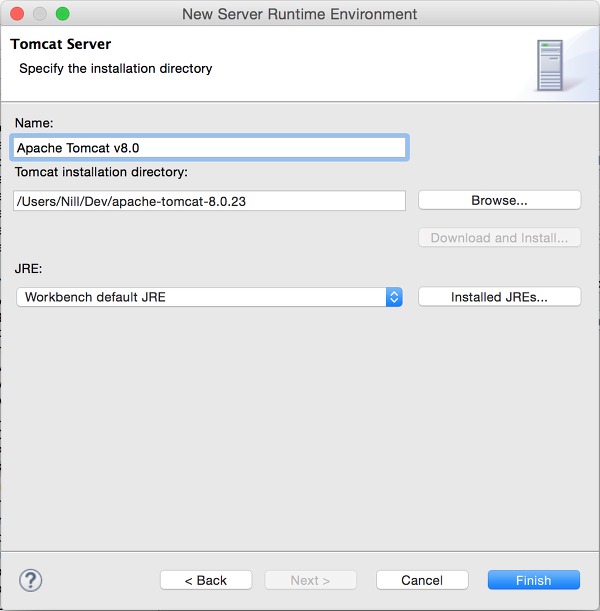

Mac에서 Eclipse에 Spring project setting하기
Eclipse 설치
Eclipse Download Link 에서 원하는 버전의 이클립스를 다운로드 한다.
나는 최신버전(Luna SR2 4.4.2)로 Eclipse IDE for Java EE Developers라고 쓰여진 버전을 다운받았다.
적당한 위치에 압축을 풀면 Eclipse는 설치 끝.
Spring 설치
일단 Eclipse 실행. 폴더 내부의 eclipse.app 아이콘을 더블클릭하면 실행된다. 처음에 workspace를 결정하라고 하는데 이것도 역시 프로젝트 용으로 적당한 폴더를 하나 만들어서 지정하면 된다.
Eclipse가 실행되고 난 후, 상단 메뉴바에서 Marketplace를 선택한다.
1 | Help > Eclipse Marketplace... |
선택하면 Eclipse Marketplace (Eclipse 관련 플러그인을 쉽게 다운 받을 수 있는 곳이라고 생각하면 될 듯) 창이 열린다. 여기서 Spring 검색.
미리 캡쳐하는 걸 까먹어서 나중에 캡쳐하는 바람에 Update/Uninstall 버튼이 보이는데, 설치하지 않은 상태라면 [Install] 버튼이 보인다. 검색 결과 중 본인이 설치한 Eclipse 버전에 맞는 Spring Tool Suite를 설치하면 된다. 나는 Luna (4.4.2)를 설치했기 때문에 STS도 역시 for Luna (4.4)를 설치했다.
맞는 버전을 선택하고 [Install] 버튼을 클릭하면 아래와 같이 설치될 목록이 나온다. 필요 없어 보이는 건 체크 해제를 한 후, [Confirm] 버튼을 누르면 상태바가 올라가면서 설치를 시작한다.
Licenses 동의하라는 말이다. I accept the terms of the license agreement 선택하고 [Finish] 버튼 클릭.
그럼 아래와 같이 Spring Tool Suite 를 설치하기 시작한다.
설치 과정이 다 끝나면 Eclipse를 재시작하라는 알림창이 나타난다. 재시작하기를 선택해서 다시 시작하면, 아래와 같은 Spring Tool Suite Overview 그림이 나타난다!
STS가 성공적으로 설치되었다 *_*
Tomcat 설정
Tomcat 사이트에 가서 원하는 버전의 Tomcat을 다운로드 받는다.
Tomcat 역시 적당한 위치에 압축을 해제하면 반은 된 것. 나 같은 경우는 Nill 밑에 Dev라는 폴더를 생성해서 Eclipse도 Tomcat도 모두 넣어줬다. 어느 위치든 편한 위치면 된다.
1. Eclipse의 서버 실행 환경 목록에 Tomcat 추가
상단 메뉴바에서 환결설정 선택.1
Eclipse > 환경설정 (단축키 ⌘,)
왼쪽 트리 메뉴에서 Runtime Environments 선택. (그냥 검색해도 됨)1
Server > Runtime Environments
와! 텅텅 비었다! 우측에 있는 [Add…] 버튼 클릭.
그러면 현재 Eclipse 에 추가할 수 있는 Server 목록이 쭉 나온다. Eclipse IDE for Jave EE Developers 를 설치했다면 아래와 같이 나오는데 만약 다른 버전을 설치해서 Apache가 나오지 않는다면 우측 상단의 Download additional server adapters link를 클릭하여 Apache adapter를 설치해주면 된다.
아까 다운로드 받았던 Tomcat 버전과 동일한 버전 선택! 하고 [Next >] 버튼 클릭.
나타나는 화면에서 [Browse…] 버튼을 클릭하여 아까 압축해제 했던 톰캣이 있는 경로를 지정해주면 된다.

그리고 대망의 [Finish] 버튼을 클릭하면, 아래 그림과 같이 Tomcat v8.0 서버가 Runtime Environments에 추가된 것을 확인할 수 있다. 이는 Eclipse 실행 환경에 tomcat server 정보를 추가했다고 보면 된다.
2. 실제 테스트용 Tomcat 서버 추가
그러면 실행 환경에 서버를 추가했으니, 이제 정말 프로젝트를 돌려볼 수 있는 Tomcat 서버로 추가한다.1
Window > Show View > Servers (만약 목록에 Server가 없다면 Other... 선택 후 Server 추가)
그러면 아래와 같이 Servers 뷰가 Eclipse Perspective에 나타난다. 현재 추가된 서버가 없기 때문에 No servers are available. Click this link to create a new server… 라는 문구가 나온다. 이 링크 클릭!
그러면 새로운 서버를 추가할 수 있는 마법사 창이 나타난다. 여기서 아까 추가한 것과 같은 버전의 서버를 선택한다. 사실 Server name은 수정하지 않아도 무방하지만 test-server라고 이름지었다. 그리고 그 아래에 Server runtime environment 를 선택할 수 있는 콤보박스가 있다. 아까 추가한 Tomcat v8.0을 선택한다. (사실 Environment를 하나만 추가했기 때문에 선택권이 없다. 여러 서버 실행환경을 테스트 해봐야 한다면 1번 과정처럼 다른 서버정보를 추가한 후, 여기서 실행환경으로 선택하면 된다.)
그리고 [Next >] 버튼을 클릭하면 아래와 같은 그림이 나온다. 현재 workspace에 Tomcat 으로 실행할 수 있는 프로젝트가 있다면 왼쪽 Available: 아래에 목록이 나타났을테지만… 지금은 아무 것도 없다ㅜ ㅜ 그냥 [Finish] 버튼을 클릭하면 된다.
그러면 아래 그림과 같이! test-server가 추가된 것을 확인할 수 있다.